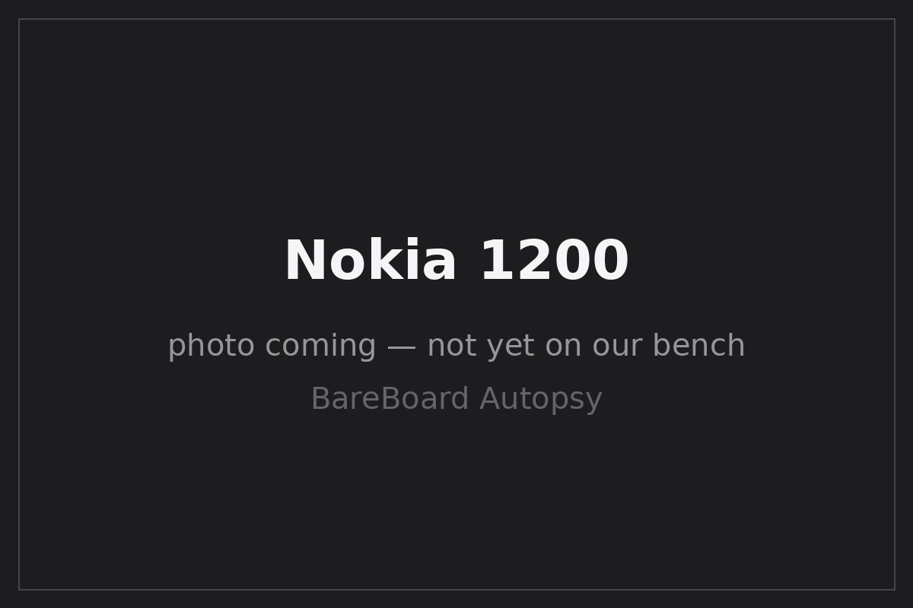

BareBoard Autopsy Report · Mobile Phones
Nokia 1200 Confirmed
The 2007 ultrabasic — announced May 3, 2007 GlobeNewswire / Nokia — with an FCC filing we can cite: QTLRH-100, granted to Nokia Corporation on May 25, 2007 for the U.S. 1200b (RH-100) Confirmed. Nokia's own leaked service schematics name the UPPCOSTO_V1.3A_PROD_UMC12A baseband design Confirmed Nokia 1200 service schematics v1.0 (PDF). We have never owned, opened, booted, probed, tested, or disassembled a Nokia 1200.

What is this thing?
The Nokia 1200 is a dual-band GSM candybar from Nokia's ultrabasic line, announced May 3, 2007 as an entry-market phone with call-time-sharing features GlobeNewswire / Nokia. The global variant (RH-99) uses GSM 900/1800; the U.S. 1200b (RH-100) uses GSM 850/1900 Confirmed Nokia 1200 service schematics v1.0 (PDF). It carries a monochrome 96×68 display, a flashlight, and a dust-resistant keypad in the same spirit as the 1110 LPCWiki — Nokia 1200.
Timeline
- 2007-05-03 — Nokia announces the 1200 for entry markets Confirmed GlobeNewswire / Nokia.
- 2007-05-25 — FCC grants QTLRH-100 to Nokia Corporation for the 1200b/RH-100 Confirmed.
- 2007-09 — 1200 released LPCWiki — Nokia 1200.
- 2026-09-27 — This report published from public records; no unit on our bench.
Outside
B Two softkeys + Navi-key cluster
C Dust-resistant one-piece keymat
D Flashlight
E Removable rear cover; BL-5C-class battery underneath
Approximately 102 × 44.1 × 17.5 mm at 80 g LPCWiki — Nokia 1200.
Board
The 1200 is a BB4.1/DCT4-derived design: Nokia's own service schematics (v1.0, covering RH-99 and RH-100) explicitly label the baseband design UPPCOSTO_V1.3A_PROD_UMC12A — a UPPCosto (ARM7TDMI) implementation Confirmed Nokia 1200 service schematics v1.0 (PDF). Public documentation describes 4 MB of flash and 256 KB of RAM with a Nokia Easy Flash II service connector Likely LPCWiki — Nokia 1200 LPCWiki — Nokia Easy Flash.
Chips
| Ref | Marking / identity | Role | Confidence | Dig deeper |
|---|---|---|---|---|
| BB | UPPCosto (ARM7TDMI) — design string UPPCOSTO_V1.3A_PROD_UMC12A | Baseband processor | Confirmed | Nokia 1200 service schematics v1.0 (PDF) — no public datasheet located |
| Flash | 4 MB (exact die marking unknown) | Firmware + user storage | Likely | LPCWiki — Nokia 1200; die-level identity awaits the bench — no public datasheet claimed |
| RAM | 256 KB | Working memory | Likely | LPCWiki — Nokia 1200; packaging unknown — no public datasheet claimed |
| Svc | Easy Flash II connector | Factory flashing / service interface | Likely | LPCWiki — Nokia Easy Flash — described at high level only |
FCC
FCC ID QTLRH-100 — granted to Nokia Corporation on May 25, 2007 Confirmed. The grant covers the 1200b (type RH-100), the U.S. dual-band GSM 850/1900 variant Confirmed. Scope discipline: this filing names the RH-100 specifically; we do not extend its test data to the global RH-99 without separate evidence.
Debug / service modes
The 1200 carries a Nokia Easy Flash II service connector for factory flashing and diagnostics LPCWiki — Nokia Easy Flash. We mention it only at this high level — its existence as a documented service interface. We have never connected to one, we publish no pinout, no baud rate, no procedure, and no instructions for defeating any lock or protection. We listen; we don't knock.
Public findings & what we didn't do
- ✅ Cited the primary FCC grant (QTLRH-100, 2007-05-25) scoped to the 1200b/RH-100.
- ✅ Quoted Nokia's own schematic design string (UPPCOSTO_V1.3A_PROD_UMC12A) service schematics.
- ✅ Kept the service connector at a high-level mention — no pinout or procedure.
- ❌ We have not opened, booted, probed, or photographed a Nokia 1200 ourselves.
- ❌ We have not verified the flash die, RF markings, or populated PCB revision.
- ❌ We have not tested the Easy Flash II interface or captured any boot log.
By the numbers
| Metric | Value | Source |
|---|---|---|
| Display | Monochrome, 96×68 px | LPCWiki |
| Network | GSM 900/1800 (RH-99); GSM 850/1900 (RH-100) | Confirmed for RH-100 service schematics |
| Baseband | UPPCosto (ARM7TDMI) | Confirmed service schematics |
| Memory | 4 MB flash; 256 KB RAM | Likely LPCWiki |
| FCC ID | QTLRH-100 (1200b/RH-100) | Confirmed |
Glossary
| BB4.1 | Nokia's baseband platform generation bridging DCT4 and later designs. |
| UPPCosto | Cost-optimized UPP baseband variant (ARM7TDMI) for ultrabasic phones. |
| Easy Flash II | Nokia's second-generation documented service connector for flashing and diagnostics. |
| RH-99 / RH-100 | Nokia type designations: RH-99 is the global 1200, RH-100 the U.S. 1200b. |
Sources & confidence
- Nokia 1200 RH-99/RH-100 service schematics v1.0 (PDF) — UPPCOSTO design string, variant bands (primary manufacturer material, mirrored).
- Same schematics (alternate mirror).
- GlobeNewswire — Nokia announces the 1200 (2007-05-03) (primary, manufacturer press release).
- LPCWiki — Nokia 1200 (community documentation).
- LPCWiki — Nokia Easy Flash (community documentation).
| Claim | Confidence | Basis |
|---|---|---|
| FCC ID QTLRH-100; Nokia Corporation; 2007-05-25; covers 1200b/RH-100 | Confirmed | FCC grant (primary evidence) |
| UPPCOSTO_V1.3A_PROD_UMC12A design string; RH-99/RH-100 bands | Confirmed | Nokia service schematics (primary manufacturer material) |
| 4 MB flash; 256 KB RAM; Easy Flash II | Likely | Community documentation; die-level detail unverified |
| Populated-board component identities | Unknown | Awaits the bench |
Legal note
This report is a transformative educational summary of publicly available records. Product names and marks belong to their owners. We describe only publicly documented service interfaces at a high level; we publish no lock-bypass, authentication-defeat, firmware-extraction, or unsafe service procedures. Our posture: we listen, we don't knock.
Related reports
- Nokia 1100 — the earlier ultrabasic classic
- Nokia 1110 / 1110i — the mid-2000s DCT4 entry phone
- Nokia 105 (2013/2015) — the later ultrabasic